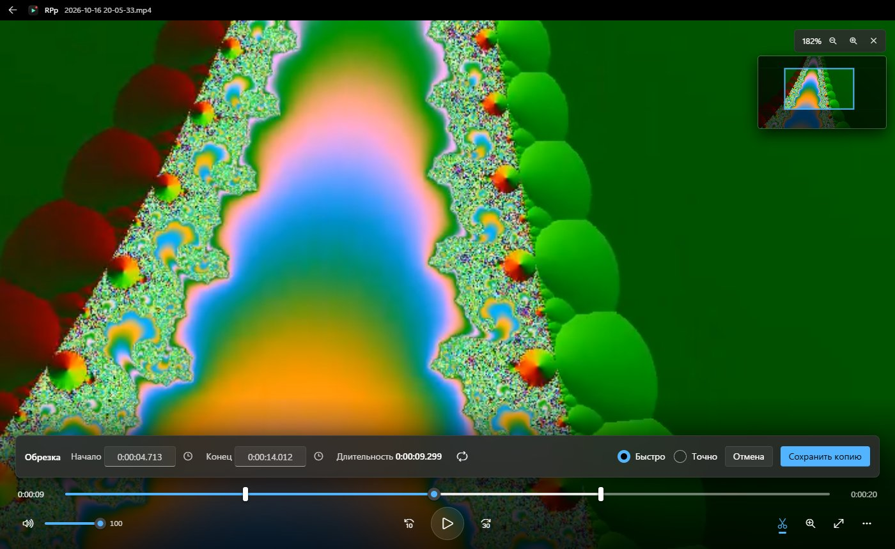

RPp — бесплатный плеер для записей OBS. Показывает все записи с превью, открывает файлы на десятки гигабайт сразу, приближает картинку до 16 раз и сохраняет фрагмент за пару секунд без потери качества.

Всё делается с клавиатуры, мышь нужна только для приближения.
Кнопка с ножницами открывает обрезку. Копия фрагмента сохраняется рядом с исходной записью: без перекодирования это занимает секунды даже для файла на 40 ГБ, а качество остаётся исходным.
До 16 раз, точно к курсору. Миникарта в углу показывает, какую часть кадра вы видите, а режим чётких пикселей помогает прочитать мелкий текст и ники.
Кадр назад и вперёд, скорость от 0,25× до 4×, повтор отмеченного фрагмента. Таймкод показывает время с точностью до кадра.
Режим «Точно» перекодирует фрагмент на видеокарте NVIDIA, AMD или Intel. Если подходящей нет, работает процессор.
Библиотека показывает записи плитками с кадром и длительностью, по дням. Плеер помнит, где вы остановились в каждой записи, а время любого кадра можно скопировать одним нажатием.
Права администратора не нужны: плеер ставится только для вашей учётной записи.